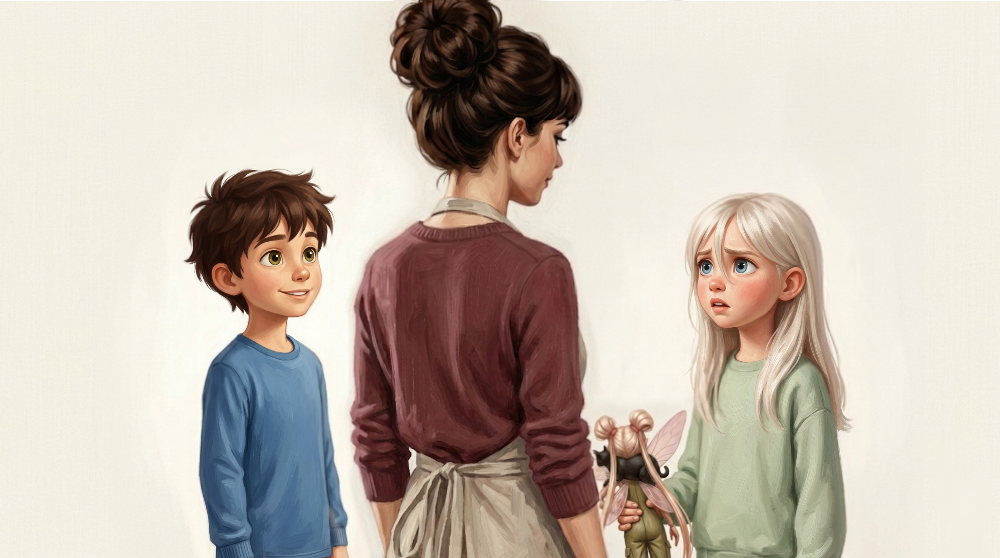

Maman !
D'accord !
On arrive.
— Maman !
— D'accord ! On arrive.
Pasa el cursor por encima para ver la traducción — o toca la tuile en móvil.
D'accord
Vale / de acuerdo
Una voz distinta — otra vez. Esta vez no es Ginette llamando desde fuera de cámara — son Bek y Keb mismos, saliendo del juego un segundo para responder a su mamá. Fíjate en la letra a mano: esa es su voz ahora, no la de Nagar ni la de Zyeu-Bleu. Maman ! es simplemente cómo los niños francófonos llaman a su mamá — cariñoso e informal. Y d'accord es una de las palabritas más útiles del francés: significa vale, de acuerdo, está bien — la vas a escuchar en todas partes.
Verbos en -er (continuación): il/elle y on
| |
parler |
arriver |
| il / elle |
parle |
arrive |
| on |
parle |
arrive |
En la página 6 conociste je parle — "yo hablo". Aquí está el resto del patrón: il, elle y on toman exactamente la misma terminación que je — suenan idénticos. Así que il/elle parle suena igual que je parle, y lo mismo pasa con arriver: il/elle arrive, on arrive — mismo sonido, misma escritura.
Sobre on: en el francés hablado de todos los días, on es la palabra que la gente realmente usa para decir "nosotros" — mucho más que el más formal nous. ¿Lo práctico? on se conjuga exactamente como il o elle, tercera persona del singular. Así que cuando Keb dice on arrive, está construido y se pronuncia exactamente como il arrive — solo que significa "nosotros llegamos" en vez de "él llega".